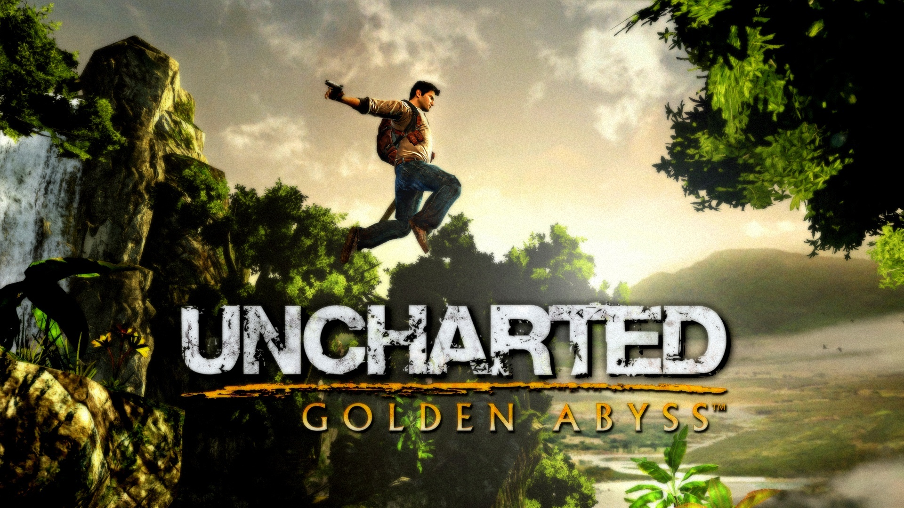
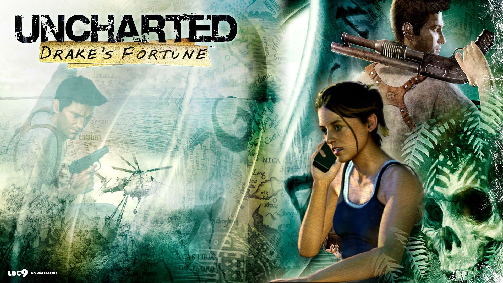
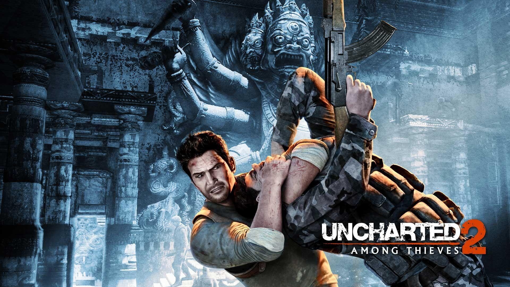
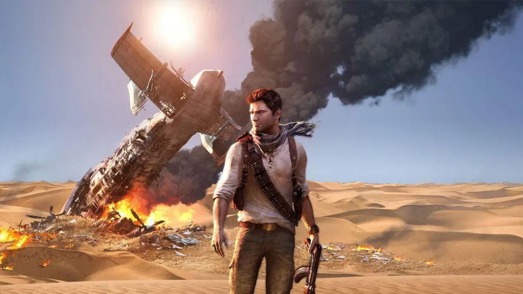
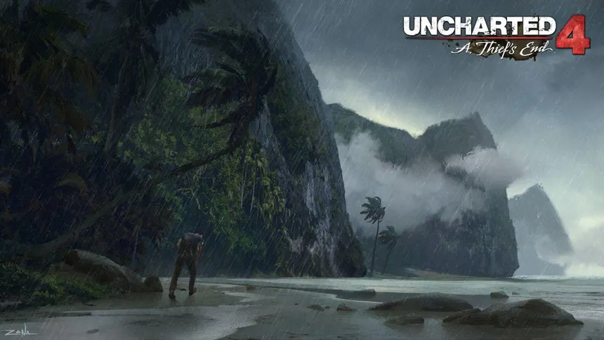

Uncharted es una saga de aventuras y acción centrada en el cazatesoros Nathan Drake, quien viaja por el mundo en busca de reliquias antiguas, ciudades perdidas y secretos históricos.
La historia combina exploración, combate y narrativa cinematográfica, convirtiéndose en una de las franquicias más importantes de PlayStation.

Uncharted: Golden Abyss funciona como una precuela dentro de la cronología de la saga, mostrando una versión más joven e impulsiva de Nathan Drake antes de los eventos de Drake’s Fortune.
La historia se centra en una expedición en América Central que comienza como una búsqueda arqueológica y termina revelando una conspiración histórica relacionada con una civilización perdida y un legado de traición.
---La historia comienza en Panamá, donde Nathan Drake se une a una expedición liderada por Jason Dante, un antiguo conocido con reputación dudosa. El objetivo inicial es encontrar restos de una civilización española desaparecida.
Desde el principio, la relación entre ambos es tensa. Dante demuestra ser manipulador, mientras que Nathan actúa con su característico instinto aventurero, sin medir completamente las consecuencias.
Este punto marca el inicio de una aventura donde la confianza será uno de los factores más frágiles.
---A medida que la expedición avanza en la selva, Nathan descubre ruinas antiguas y pistas sobre una expedición española que terminó en desastre.
Durante esta etapa aparece Marisa Chase, una arqueóloga que busca respuestas sobre el destino de su abuelo desaparecido. Su conocimiento histórico aporta una nueva dimensión a la investigación.
La relación entre los personajes se complica cuando Dante revela sus verdaderas intenciones, traicionando a Nathan y utilizando la información descubierta para su propio beneficio.
---Nathan y Marisa continúan la expedición por su cuenta, descubriendo que la civilización perdida está conectada con una expedición española que ocultó secretos relacionados con oro, poder y supervivencia.
Las ruinas muestran signos de conflictos internos, lo que sugiere que la amenaza no era solo externa, sino también humana.
Aquí se establece un tema recurrente en la saga: la ambición humana como causa principal de la destrucción.
---La búsqueda lleva a Nathan a zonas más peligrosas, incluyendo templos ocultos y estructuras antiguas que revelan el destino de la expedición española.
Se descubre que los conquistadores no solo buscaban riqueza, sino que quedaron atrapados en una situación donde la supervivencia se volvió más importante que el tesoro.
La historia toma un tono más oscuro, mostrando cómo el poder puede corromper incluso a quienes lo buscan por motivos aparentemente nobles.
---El conflicto culmina cuando Nathan enfrenta nuevamente a Dante, quien ha llevado la búsqueda del tesoro a un extremo peligroso.
La confrontación no es solo física, sino ideológica: mientras Dante representa la ambición sin límites, Nathan comienza a mostrar una evolución hacia una moral más definida.
El tesoro, lejos de ser una recompensa, se convierte en el detonante del conflicto final.
---Al final de la historia, Nathan sobrevive a la expedición, pero la experiencia lo cambia profundamente. Aprende que cada tesoro tiene un costo, y que no todo lo que se encuentra debe ser reclamado.
Uncharted: Golden Abyss establece las bases del personaje que veremos en los juegos posteriores: un aventurero más consciente, pero aún impulsado por la curiosidad y el deseo de descubrir lo desconocido.
Esta historia funciona como el verdadero origen del Nathan Drake que conocemos en el resto de la saga.

Uncharted: Drake’s Fortune es el punto de inicio de la saga de Nathan Drake, donde se establece el tono de aventura, exploración y misterio arqueológico que define toda la franquicia. La historia comienza con una búsqueda que rápidamente se transforma en algo mucho más peligroso de lo esperado.
Nathan Drake es un cazador de tesoros que afirma ser descendiente del explorador Sir Francis Drake. Su vida está marcada por expediciones, engaños históricos y la constante búsqueda de reliquias perdidas que la historia oficial no ha logrado explicar completamente.
---La historia inicia en el océano Pacífico, donde Nathan Drake y la periodista Elena Fisher recuperan el ataúd de Sir Francis Drake desde el fondo del mar. Lo que debería ser un hallazgo histórico común se convierte en el primer giro importante del viaje.
Dentro del ataúd no hay oro ni reliquias físicas, sino un diario que revela la existencia de una pista hacia un tesoro perdido en Sudamérica. Este descubrimiento cambia por completo el objetivo de Nathan, empujándolo hacia una nueva expedición.
---Siguiendo las pistas del diario, Nathan viaja a Panamá, donde comienza a reconstruir la ruta de Francis Drake. Aquí descubre que el verdadero objetivo no es simplemente un tesoro, sino una ciudad legendaria asociada al mito de El Dorado.
En este punto, la historia deja de ser una simple búsqueda arqueológica y comienza a transformarse en una investigación sobre secretos históricos ocultos deliberadamente.
---Nathan y Elena se adentran en la selva amazónica, un entorno hostil donde la naturaleza, las ruinas antiguas y la presencia de mercenarios crean un equilibrio inestable.
Aquí aparecen fuerzas externas lideradas por Gabriel Roman y Atoq Navarro, quienes también buscan el tesoro con fines de poder y control.
La selva no solo funciona como escenario físico, sino como un filtro entre la civilización moderna y los secretos enterrados del pasado.
---La investigación lleva finalmente a una isla aislada en el Pacífico Sur, donde se revela que el lugar fue utilizado como base de experimentación durante la Segunda Guerra Mundial.
Los restos de instalaciones militares sugieren que el mito de El Dorado no es solo arqueológico, sino que tiene una dimensión mucho más peligrosa de lo que Nathan imaginaba.
El lugar está lleno de evidencias de experimentos fallidos relacionados con la estatua del tesoro.
---En el corazón de la isla se encuentra el templo de El Dorado, donde finalmente se revela la verdad: el tesoro no es oro ni riqueza, sino una reliquia maldita con propiedades biológicas.
La estatua contiene una sustancia que transforma a los humanos en criaturas violentas, explicando la desaparición de expediciones anteriores.
El mito del tesoro se convierte en una advertencia sobre la ambición humana y sus consecuencias.
---El enfrentamiento final ocurre dentro del templo, donde la ambición de los enemigos desencadena el caos total. La isla entra en colapso mientras la verdad de El Dorado se revela completamente.
Nathan Drake, junto a Elena Fisher y Victor Sullivan, logra sobrevivir, pero el tesoro queda destruido, evitando que su poder continúe afectando al mundo.
La historia concluye estableciendo el tono de la saga: cada tesoro legendario tiene un costo, y la verdad detrás de los mitos antiguos suele ser más peligrosa que la leyenda misma.

Uncharted 2: Among Thieves representa el punto donde la saga de Nathan Drake evoluciona hacia una escala mucho más ambiciosa, combinando historia, traición y elementos casi míticos en una aventura que lo lleva a enfrentarse no solo a enemigos humanos, sino a las consecuencias de descubrir conocimientos prohibidos.
La historia gira en torno a la leyenda de Shambhala y la Piedra Cintamani, un supuesto artefacto capaz de otorgar poder sobrehumano, lo que atrae a figuras peligrosas dispuestas a todo por obtenerlo.
---La historia comienza con Nathan Drake gravemente herido, intentando escapar de un tren destruido que cuelga de un acantilado en las montañas del Himalaya. Este momento no solo establece el tono de peligro, sino que funciona como un adelanto de hasta dónde llegará la aventura.
Cada movimiento de Nathan refleja agotamiento, dolor y desesperación, dejando claro que esta expedición ha superado cualquier límite que haya enfrentado anteriormente.
---La narrativa retrocede para mostrar el inicio real del conflicto. Nathan, junto a Harry Flynn y Chloe Frazer, realiza un robo en un museo en Estambul.
El objetivo es recuperar una lámpara que pertenecía a la flota de Marco Polo. Dentro de ella encuentran pistas sobre una expedición desaparecida que transportaba un secreto mucho más importante que cualquier tesoro.
Este momento marca el inicio de una cadena de eventos donde la confianza comienza a romperse, y donde las motivaciones reales de cada personaje empiezan a salir a la luz.
---Siguiendo las pistas obtenidas en Estambul, Nathan llega a la selva de Borneo, un entorno denso, hostil y prácticamente intacto por el paso del tiempo.
A diferencia de otros escenarios, la selva no solo representa un obstáculo físico, sino también una barrera hacia un pasado que fue ocultado deliberadamente.
En lo profundo de la jungla, Nathan descubre un templo antiguo que contiene información crucial sobre la expedición de Marco Polo. Aquí se revela que los barcos del explorador no regresaron intactos, y que lo que transportaban estaba relacionado con algo mucho más peligroso que oro.
Este descubrimiento cambia completamente el enfoque de la aventura: ya no se trata de encontrar riqueza, sino de entender qué fue lo suficientemente peligroso como para ser ocultado durante siglos.
---Tras los eventos en Borneo, Nathan es traicionado por Flynn y capturado por las fuerzas de Zoran Lazarević, un criminal de guerra obsesionado con obtener poder absoluto.
Este momento representa una caída narrativa importante, donde Nathan pierde el control de la situación y se convierte en una pieza dentro de un conflicto mucho mayor.
La traición no solo es física, sino también emocional, reforzando la idea de que en este mundo la lealtad es extremadamente frágil.
---Nathan logra escapar y llega a Nepal, una ciudad devastada por el conflicto armado. Aquí la historia adquiere una escala mucho mayor, mostrando cómo la búsqueda del poder puede afectar regiones enteras.
Durante esta etapa, se reencuentra con Elena Fisher, lo que añade una dimensión emocional a la narrativa. Su relación refleja el conflicto interno de Nathan entre su vida de aventurero y la posibilidad de algo más estable.
Nepal se convierte en un campo de batalla donde la historia, la política y la ambición se mezclan en un entorno completamente inestable.
---La búsqueda lleva a Nathan a las montañas del Himalaya, donde encuentra un pueblo aislado y un monasterio que guarda el conocimiento sobre Shambhala.
Aquí conoce a Tenzin, quien lo ayuda a atravesar entornos extremos y a entender que el poder que buscan no es algo que deba ser utilizado.
Las cuevas, templos y estructuras antiguas revelan que la Piedra Cintamani no es un simple artefacto, sino una fuente de energía capaz de alterar la naturaleza humana.
---Nathan finalmente llega a Shambhala, una ciudad oculta llena de vida, energía y secretos ancestrales.
Aquí se revela la verdad: la Piedra Cintamani es en realidad la savia de un árbol gigante, capaz de otorgar fuerza sobrehumana a quienes la consumen.
Sin embargo, este poder viene acompañado de corrupción, transformando a quienes lo utilizan en versiones distorsionadas de sí mismos.
---Lazarević consume el poder de la ciudad y se convierte en una amenaza casi invencible. Nathan debe enfrentarlo en una batalla donde la inteligencia y el entorno son más importantes que la fuerza.
El enfrentamiento final simboliza la lucha contra la ambición desmedida, donde el verdadero enemigo no es el poder, sino el deseo de controlarlo.
---Tras la caída de Shambhala, Nathan logra sobrevivir, pero queda marcado por la experiencia. Comprende que cada descubrimiento tiene un costo, y que algunos secretos existen por una razón.
Uncharted 2: Among Thieves establece definitivamente el tono de la saga: la aventura no es solo descubrimiento, sino también responsabilidad frente a lo desconocido.

Uncharted 3: Drake's Deception lleva la saga de Nathan Drake a una historia mucho más personal, más ambigua y más centrada en la relación entre el pasado, la obsesión y la manipulación. A diferencia de los juegos anteriores, acá no solo importa el tesoro o la ciudad perdida, sino también quién fue Nathan Drake antes de convertirse en el cazador de reliquias que conocemos, y qué tan lejos está dispuesto a llegar para seguir persiguiendo leyendas antiguas.
La aventura gira alrededor de Ubar, la llamada Atlántida de las Arenas, una ciudad perdida envuelta en mito, traición y alucinaciones. Desde el principio, el juego deja claro que no se trata solo de encontrar un tesoro, sino de sobrevivir a una búsqueda que parece estar marcada por una organización secreta con siglos de ventaja.
La historia arranca en Londres, en un pub donde Nathan Drake y Victor Sullivan se reúnen en un ambiente que desde el principio se siente raro, tenso y vigilado. Nathan está siguiendo una pista relacionada con el anillo de Francis Drake, y esa pequeña reliquia se convierte rápidamente en el centro de una trampa mucho más grande de lo que parecía al comienzo.
El lugar funciona como una puerta de entrada al verdadero conflicto. Lo que parece una negociación o una simple reunión termina revelando que hay personas observando cada movimiento de Nathan y Sully. La presencia de Katherine Marlowe y su organización secreta deja claro que no están persiguiendo solo una leyenda: están siguiendo un secreto que viene siendo protegido y manipulado desde hace generaciones.
La tensión en Londres no se basa únicamente en la acción, sino en la sensación de que Nathan ya entró en una historia que empezó mucho antes de él. Ese anillo, que parece un objeto pequeño, en realidad es una clave para abrir la ruta hacia Ubar y también el recordatorio de que el pasado de Francis Drake sigue vivo en el presente de Nathan.
La historia retrocede al pasado y muestra a un joven Nathan en Cartagena, Colombia, intentando robar el anillo de Francis Drake en un museo. Esta parte es una de las más importantes del juego porque explica de dónde viene la relación entre Nathan y Sully, y también deja ver que la vida de Drake como cazatesoros no nació de la nada, sino de una mezcla de curiosidad, necesidad y una habilidad natural para meterse en problemas.
En este flashback, Nathan todavía no es el aventurero experimentado de los otros juegos. Es impulsivo, vive al límite y todavía está construyendo la personalidad que después lo definirá. Sully aparece como alguien mucho más experimentado, con un ojo entrenado para ver el potencial de ese chico que claramente ya tenía talento, pero también una tendencia peligrosa a no medir las consecuencias.
Ese encuentro es fundamental, porque no solo explica cómo se conocieron, sino que también establece la confianza entre ambos. Sully no ve a Nathan como un simple ladrón; ve a alguien con instinto, con agallas y con la clase de obsesión que puede llevarte a descubrir cosas increíbles o a destruirte por completo.
Cartagena sirve para mostrar que el vínculo entre ambos no nació de una misión ni de una casualidad, sino de un momento clave que definió toda la historia posterior. Sin ese flashback, la relación entre Nathan y Sully no tendría el peso emocional que tiene en el resto del juego.
Ya en el presente, Nathan sigue la pista del anillo y de la organización de Marlowe hasta un castillo abandonado en Francia. Este lugar, conocido por sus ruinas y su atmósfera decadente, se convierte en una de las primeras grandes exploraciones del juego. El castillo no es solo un escenario visualmente espectacular, sino también un espacio donde el pasado de la búsqueda empieza a alinearse con la verdad.
Allí Nathan encuentra rastros de la historia oculta de Francis Drake y de la expedición que, siglos atrás, ya había intentado llegar a Ubar. El castillo está lleno de rastros de una investigación antigua, como si alguien hubiese estudiado esa misma leyenda mucho antes de que Nathan llegara. Esto refuerza la idea de que la verdad no fue perdida por accidente, sino escondida a propósito.
En esta sección también aparece la idea de la manipulación. Nathan empieza a darse cuenta de que Marlowe y sus hombres no solo están interesados en el tesoro, sino en controlar el acceso al conocimiento. El castillo funciona como un lugar de transición: todavía no revela el secreto completo, pero deja claro que la historia es mucho más grande y mucho más peligrosa de lo que parecía en Londres.
La exploración del castillo, además, introduce el tono psicológico del juego. Nathan empieza a ver que la búsqueda ya no depende solamente de su habilidad para pelear o escalar, sino de su capacidad para distinguir qué es verdad y qué es parte de una trampa cuidadosamente preparada.
La historia lleva a Nathan y Sully a Siria, donde exploran ruinas antiguas conectadas con la ruta hacia Ubar. Esta sección es importante porque deja de lado la fachada elegante de los escenarios anteriores y empieza a mostrar un mundo de piedra, polvo y reliquias enterradas que parecen haber esperado siglos para ser encontradas.
En Siria, el juego se vuelve más arqueológico y más solemne. Nathan ya no está buscando solo un objeto o una pista aislada, sino una estructura completa de símbolos, rutas y secretos que conectan el anillo de Francis Drake con la ciudad perdida. Los espacios cerrados, las tumbas y los pasillos ocultos aumentan la sensación de estar avanzando hacia algo antiguo y hostil.
La relación entre Nathan y Sully también gana más peso en esta parte. Sully no está simplemente acompañando a Nathan; está tratando de protegerlo, de frenar sus impulsos y de darle algo de estabilidad en una aventura que ya está empezando a volverse demasiado grande. Esa dinámica es parte de lo que hace que este juego sea tan importante para la saga: acá no solo hay acción, también hay una relación afectiva que se está poniendo a prueba.
La investigación en Siria confirma que la leyenda de Ubar no es un mito vacío. Hay huellas reales de expediciones anteriores, de rutas ocultas y de un conocimiento que ha sido protegido durante siglos. Eso hace que el peligro crezca, porque ya no están detrás de una simple ruina: están entrando en el centro de una historia que mucha gente quiso enterrar.
Una de las partes más recordadas del juego ocurre en Yemen, donde Nathan llega a una zona urbana llena de movimiento, mercados, calles angostas y gente tratando de vivir normalmente en medio de un clima de tensión creciente. La ciudad funciona como contraste frente a los escenarios antiguos, porque acá la historia se mete en un lugar vivo, caótico y lleno de actividad humana.
En Yemen aparece nuevamente Elena Fisher, y su reencuentro con Nathan agrega una capa emocional muy fuerte. Elena no está ahí solo como apoyo narrativo; su presencia vuelve a confrontar a Nathan con la vida que podría haber tenido si no estuviera siempre persiguiendo reliquias, ruinas y leyendas. Entre ellos hay cariño, historia compartida y también una tensión constante por las decisiones que Nathan toma una y otra vez.
El mercado es una de las mejores representaciones del estilo Uncharted: un entorno cotidiano que, de repente, explota en persecuciones, disparos y caos. Nathan se mueve entre puestos, callejones y multitudes mientras intenta seguir pistas sin perder de vista a los enemigos. La escena tiene ritmo, peligro y una sensación de urgencia que hace que la historia avance con mucha fuerza.
Yemen marca un punto importante porque hace que la aventura se sienta global y humana al mismo tiempo. Ya no están solamente en ruinas perdidas; están cruzando una ciudad real, con personas reales, mientras el conflicto de la búsqueda amenaza con arrasar todo lo que tocan.
Después del mercado, la historia se mueve hacia otra secuencia clave: el aeropuerto. Allí Nathan intenta interceptar un cargamento y seguir la pista que puede llevarlo más cerca de Ubar, pero la situación escala rápidamente y todo se convierte en una carrera desesperada contra enemigos, seguridad armada y un plan que se desmorona por segundos.
El aeropuerto es importante porque cambia el tono del capítulo. Ya no es solamente exploración urbana; ahora hay un sentido de urgencia total, como si Nathan estuviera persiguiendo una pista que podría desaparecer en cualquier momento. Los pasillos, las pistas y el caos de los vehículos crean una sensación de cierre de cerco, como si el mundo estuviera empujando a Nathan hacia su siguiente gran error.
La secuencia del avión es una de las más intensas del juego. Nathan queda atrapado en medio del despegue y termina luchando dentro del propio avión, en una situación donde el espacio se vuelve claustrofóbico y violentísimo. Ese momento resume muy bien la clase de aventura que es Uncharted 3: velocidad, destrucción, improvisación y la constante idea de que Nathan siempre termina sobrevivendo por pura suerte, por instinto o porque se niega a rendirse.
El avión termina cayendo y esa caída lo empuja todavía más lejos de cualquier posibilidad de control. La aventura deja de ser una expedición para convertirse en una supervivencia brutal.
Después del derrumbe del avión, Nathan queda solo en el desierto de Rub al Khali, una de las regiones más hostiles y desoladas del juego. Esta parte es importantísima porque muestra a Nathan sin recursos, sin compañía y sin la capacidad de apoyarse en sus habituales trucos o en la ayuda de otros.
El calor, la sed y el aislamiento comienzan a deteriorar su percepción. El desierto no solo lo debilita físicamente, sino que también lo lleva al límite mental. En esta etapa, las alucinaciones se vuelven cada vez más fuertes y la línea entre recuerdos, realidad y delirio empieza a romperse por completo.
Esta parte del juego es clave para el desarrollo del personaje porque muestra que Nathan no es invulnerable. Durante años se lo vio como alguien capaz de escapar de cualquier situación, pero acá el juego lo pone de frente con su punto más bajo. Ya no está jugando al aventurero; está sobreviviendo como puede.
El desierto funciona como una prueba extrema. Todo lo que Nathan venía arrastrando en términos de obsesión, culpa y agotamiento emocional se concentra acá, en un lugar donde la soledad y el calor hacen que cada paso parezca el último.
Finalmente, Nathan llega a Ubar, la ciudad perdida que le da sentido a toda la búsqueda. Este lugar es la culminación de la historia, el sitio donde se revela que la leyenda no era solo una historia romántica sobre una ciudad fantástica, sino una advertencia sobre lo que ocurre cuando una civilización intenta controlar un poder que no entiende.
Ubar está llena de arquitectura monumental, estructuras enterradas y una presencia casi irreal. El lugar transmite una sensación de grandeza y de ruina al mismo tiempo, como si todo lo que alguna vez vivió allí hubiera sido destruido por su propio conocimiento.
La verdad principal es que la ciudad cayó por una sustancia que provocaba alucinaciones y destruía la estabilidad mental de quienes la usaban. Eso explica la desaparición de la civilización y también conecta todo con la obsesión de los personajes que siguieron esa pista durante siglos.
Ubar no es solo el destino final de la aventura; es la prueba de que la ambición humana siempre encuentra la manera de corromper incluso aquello que parece místico o sagrado. Nathan entiende por fin que hay secretos que sobreviven no porque sean imposibles de descubrir, sino porque su costo es demasiado alto.
El enfrentamiento final cierra el arco de Marlowe, Talbot y la organización secreta, y deja a Nathan frente a la pregunta más importante de toda la saga: cuánto de su vida está realmente definida por la aventura y cuánto por una obsesión que no sabe soltar.
Después de sobrevivir a Ubar, Nathan ya no puede ver su historia de la misma manera. Todo lo que vivió en el juego le demuestra que perseguir leyendas no solo lo pone en peligro a él, sino también a las personas que lo rodean. Sully, Elena y el resto de su entorno terminan pagando el precio de una vida que siempre está al borde del colapso.
Uncharted 3 no solo cuenta la búsqueda de una ciudad perdida. Cuenta el costo de vivir persiguiendo el pasado, la fragilidad de las relaciones de Nathan y la forma en que una mentira antigua puede arrastrarlo a una guerra moderna por algo que nadie debería poseer.

Uncharted 4: A Thief’s End continúa directamente después de los eventos de Uncharted 3, mostrando a un Nathan Drake que ha intentado dejar atrás su vida como cazador de tesoros para construir algo más estable junto a Elena Fisher.
Sin embargo, el pasado nunca desaparece del todo, y esta entrega gira en torno a una última aventura que no solo pone en juego su vida, sino también su identidad y todo lo que ha construido.
---Nathan vive junto a Elena en una casa tranquila, trabajando en recuperación marítima. Su día a día es completamente distinto: explora restos hundidos, pero dentro de un marco legal, sin persecuciones ni conflictos.
A simple vista, parece haber encontrado estabilidad. Sin embargo, esta rutina también revela algo más profundo: una sensación constante de que esa vida no lo llena completamente.
La aventura no desapareció de Nathan, solo quedó reprimida.
---La historia introduce a Sam Drake, el hermano mayor de Nathan, a través de recuerdos del pasado. Ambos crecieron juntos escapando de un sistema que nunca les dio estabilidad.
Sam es quien impulsa la fascinación por los piratas, especialmente por la leyenda de Henry Avery, sembrando en Nathan la idea de que su destino está ligado a descubrir algo más grande.
Estos recuerdos recontextualizan toda la saga: Nathan no buscaba tesoros solo por aventura, sino por una conexión con su pasado y con su hermano.
---La vida de Nathan cambia completamente cuando Sam reaparece, supuestamente escapado de prisión y en peligro de muerte.
Le cuenta que necesita encontrar el tesoro de Henry Avery para saldar una deuda con un criminal peligroso.
Este momento es clave: Nathan decide volver a la aventura, pero lo hace ocultándoselo a Elena, lo que marca el inicio del conflicto emocional más fuerte del juego.
---Nathan, Sam y Sully viajan a una prisión en Italia donde buscan una pista relacionada con la cruz de San Dimas, clave para seguir el rastro del tesoro.
La exploración revela que Avery no solo escondió riqueza, sino que dejó un sistema de pruebas diseñado para ocultar su legado.
Aquí también aparece Rafe Adler, antiguo aliado convertido en rival, cuya obsesión por el tesoro lo pone en conflicto directo con Nathan.
---Siguiendo las pistas, el grupo llega a Escocia, donde exploran una catedral en ruinas y un cementerio lleno de símbolos piratas.
Descubren que Avery no actuó solo, sino que formaba parte de una red de piratas que compartían secretos y riquezas.
Este punto amplía la escala de la historia: ya no se trata de un tesoro individual, sino de toda una civilización pirata.
---La búsqueda lleva a Nathan a Madagascar, donde la historia se vuelve más intensa con persecuciones, enfrentamientos y descubrimientos clave.
Aquí se revela la verdad sobre Sam: nunca estuvo en peligro por una deuda, sino que manipuló a Nathan para volver a la búsqueda.
Este momento rompe la confianza entre ambos y se convierte en uno de los puntos emocionales más fuertes del juego.
---Nathan finalmente descubre Libertalia, la mítica colonia pirata fundada por Avery y otros capitanes.
El lugar, lejos de ser un paraíso, es una ciudad destruida por la traición interna. Los propios piratas se destruyeron entre sí por codicia.
Esto refleja el tema central del juego: el tesoro no destruye a las personas, sino lo que están dispuestas a hacer por él.
---El enfrentamiento final ocurre contra Rafe Adler, quien representa la obsesión llevada al extremo.
A diferencia de otros villanos, Rafe no busca poder sobrenatural, sino validación personal, lo que lo hace aún más peligroso.
Nathan lo enfrenta en una batalla que simboliza el cierre de su vida como aventurero.
---Después de los eventos, Nathan decide abandonar definitivamente la búsqueda de tesoros y enfocarse en su vida con Elena.
El epílogo muestra a su hija explorando recuerdos del pasado, sugiriendo que la aventura no desaparece, pero puede transformarse.
Uncharted 4: A Thief’s End cierra la historia de Nathan Drake con una idea clara: el verdadero tesoro no era lo que buscaba, sino lo que decidió conservar.
Uncharted 4: A Thief’s End no solo es una saga de acción, sino una historia sobre el costo de la aventura y el impacto de vivir una vida en constante peligro en busca de lo desconocido.